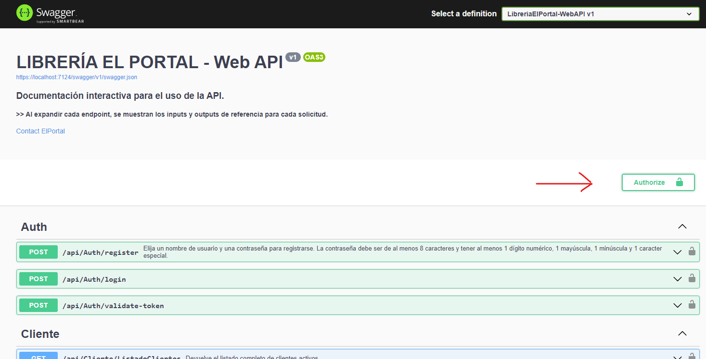
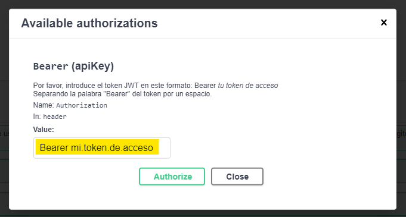
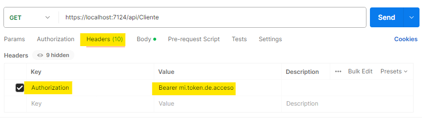

Proteger una API ASP.NET Core con JWT
JWT (JSON Web Token) ofrece un sistema de autenticación para proteger y regular el acceso a los recursos de nuestra API, mediante el uso de tokens de seguridad.
Características del sistema de autenticación con JWT
- Se requiere contar con un sistema de login. Para ello, es necesario crear las tablas correspondientes en nuestra base de datos.
- Cuando un usuario inicia sesión, si las credenciales son válidas, recibe como resultado un token de acceso.
- Para acceder a los recursos de la API será requerido incorporar este token en el header de la solicitud, para aquellos recursos que se encuentren protegidos.
ASP.NET Core, también cuenta con un paquete de administración de usuarios llamado Identity, el cual proporciona varias funcionalidades relacionadas con la autenticación y autorización de usuarios.
En esta guía, dado que la intención es centrarnos en el uso de JWT, no usaremos Identity y nos limitaremos a usar una tabla de usuarios sensilla, para entender cómo funciona esta herramienta. Si te interesa investigar lo que ofrece Identity, podés visitar la página de documentación oficial de Microsoft.
Si querés saber más sobre JWT, podés visitar el sitio oficial de JWT, donde encontrarás toda la documentación disponible.
Para desarrollar lo propuesto en esta guía, es necesario contar con:
-
Visual Studio 2022 configurado para poder crear aplicaciones ASP.NET con C#.
-
SQL Server Management Studio o Azure Data Studio.
-
Un proyecto ASP.NET Core Web API (.NET 6 o superior).
-
Postman (No es obligatorio, pero es recomendable).
En esta guía se asume que contás con los siguientes conocimientos:
-
ASP.NET Core Web API (.NET 6 o superior).
-
Entity Framework Core.
-
Nociones básicas del protocolo HTTP.
-
Enfoques DB First y Code First (comandos básicos en consola PM).
En caso de que necesites repasar algunos conceptos acerca de cómo desarrollar una API con .NET Core, te recomiendo que eches un vistazo a la Guía ASP.NET Core Web API, o bien podés visitar la documentación oficial de Microsoft.
Crear las entidades necesarias
NOTAS:
-
Este paso es válido en caso de estar trabajando en un proyecto BD First.
-
Si se trata de un proyecto Code First, ver el apartado para Opción Code First.
Se crea la tabla Users en la base de datos y, opcionalmente, se pueden crear también otras tablas como Roles y UserRoles, si se quiere agregar distintos tipos de permisos a los usuarios (autorización).
Como la finalidad de esta guía es abordar el uso de tokens JWT, nos limitaremos a trabajar simplemente con la tabla de usuarios.
Script T-SQL para la creación de las tablas
CREATE TABLE [dbo].[Users] (
[Id] INT IDENTITY (1, 1) NOT NULL,
[Username] NVARCHAR (255) NOT NULL,
[PasswordHash] NVARCHAR (255) NOT NULL,
[PasswordSalt] VARBINARY (MAX) NOT NULL,
[Status] BIT NULL,
[FechaAlta] DATETIME NOT NULL,
[TipoUsuario] int NOT NULL,
PRIMARY KEY CLUSTERED ([Id] ASC),
UNIQUE NONCLUSTERED ([Username] ASC)
);
Usamos los campos PasswordHash y PasswordSalt para guardar la contraseña encriptada y no exponer esta información en la tabla de usuarios de forma directa.
Para poder utilizar el sistema de autenticación con JWT, es necesario instalar el paquete “Microsoft.AspNetCore.Authentication.JwtBearer”
-
Abrir Administrador de paquetes NuGet.
-
Buscar e instalar el paquete Microsoft.AspNetCore.Authentication.JwtBearer.
NOTA:
Es importante que la versión del paquete coincida con la versión de .Net del proyecto.
Si la API utiliza la versión .Net 8, se debe elegir una versión 8.x.x de este paquete (ej., 8.0.2).
Configuracion para usar el paquete JWT Bearer
Para poder utilizar el sistema de autenticación JWT, es necesario definir algunos atributos de configuracion en appsettings.json y agregar el servicio al contenedor de servicios en Program.cs
En appsettings.json
-
En el archivo de configuración appsettings.json, se agregarán los siguientes atributos:
-
Ejemplo:
"JwtSettings": {
"Key": "wOajndfmty1dwuQOak68N2NadtM8HW5M",
"Issuer": "https://localhost:80/",
"Audience": "https://localhost:80/",
"TokenExpirationMinutes": 60
}
En Program.cs
-
En el archivo Program.cs, se agrega el servicio JwtBearer al contenedor de servicios:
var builder = WebApplication.CreateBuilder(args);
var config = builder.Configuration;
builder.Services.AddAuthentication(x =>
{
x.DefaultAuthenticateScheme = JwtBearerDefaults.AuthenticationScheme;
x.DefaultChallengeScheme = JwtBearerDefaults.AuthenticationScheme;
x.DefaultScheme = JwtBearerDefaults.AuthenticationScheme;
}).AddJwtBearer(x =>
{
x.TokenValidationParameters = new TokenValidationParameters
{
ValidIssuer = config["JwtSettings:Issuer"],
ValidAudience = config["JwtSettings:Audience"],
IssuerSigningKey = new SymmetricSecurityKey(Encoding.UTF8.GetBytes(config["JwtSettings:Key"]))
ValidateAudience = true,
ValidateIssuer = true,
ValidateLifetime = true,
ValidateIssuerSigningKey = true
};
});
builder.Services.AddAuthorization();
var app = builder.Build();
-
Si se quiere realizar pruebas desde Swagger UI, se debe configurar Swagger para que utilice autenticación JWT Bearer:
var builder = WebApplication.CreateBuilder(args);
var config = builder.Configuration;
builder.Services.AddAuthentication(x =>
{
x.DefaultAuthenticateScheme = JwtBearerDefaults.AuthenticationScheme;
x.DefaultChallengeScheme = JwtBearerDefaults.AuthenticationScheme;
x.DefaultScheme = JwtBearerDefaults.AuthenticationScheme;
}).AddJwtBearer(x =>
{
x.TokenValidationParameters = new TokenValidationParameters
{
ValidIssuer = config["JwtSettings:Issuer"],
ValidAudience = config["JwtSettings:Audience"],
IssuerSigningKey = new SymmetricSecurityKey(Encoding.UTF8.GetBytes(config["JwtSettings:Key"])),
ValidateAudience = true,
ValidateIssuer = true,
ValidateLifetime = true,
ValidateIssuerSigningKey = true
};
});
builder.Services.AddAuthorization();
builder.Services.AddSwaggerGen(c =>
{
c.SwaggerDoc("v1", new OpenApiInfo { Title = "AuthTest", Version = "v1" });
// Configura la seguridad de Swagger para requerir un token JWT
c.AddSecurityDefinition("Bearer", new OpenApiSecurityScheme
{
In = ParameterLocation.Header,
Description = "Por favor, introduce el token JWT en este formato: Bearer tu.token.de.acceso, separando la palabra \"Bearer\" del token por un espacio.",
Name = "Authorization",
Type = SecuritySchemeType.ApiKey
});
c.AddSecurityRequirement(new OpenApiSecurityRequirement
{
{
new OpenApiSecurityScheme
{
Reference = new OpenApiReference { Type = ReferenceType.SecurityScheme, Id = "Bearer" }
},
Array.Empty<string>()
}
});
});
var app = builder.Build();
Como se menciona en el apartado donde se crea de la tabla de usuarios, la contraseña la guardaremos encriptada en la base de datos, con el objetivo de proteger esta información.
Por este motivo, será necesario crear una clase auxiliar con métodos para encriptar y validar la contraseña.
A continuación se detallan los pasos a seguir para administrar el manejo de contraseñas al registrar y validar un usuario.
-
Si no existe, crear el directorio auxiliar en la raíz del proyecto. Ej., "Helpers".
-
Dentro de este directorio auxiliar, crear la clase PasswordHasher.
-
Esta clase tendrá dos métodos estáticos:
-
HashPassword, que recibe la contraseña ingresada por el usuario al registrarse y devuelve la contraseña encriptada y un valor de tipo byte[] que sirve como llave para luego desencriptar la contraseña guardada a la hora de validar el proceso de login.
-
VerifyPassword, que recibe la contraseña ingresada por el usuario y los valores PasswordHash y PasswordSalt guardados en la tabla de usuarios, para el nombre de usuario ingresado.
-
Así se verá nuestra clase que administra el registro y validación de contraseñas:
using System.Security.Cryptography;
using System.Text;
namespace JwtTokenTest2.Helper
{
public class PasswordHasher
{
public static (string hashedPassword, byte[] salt) HashPassword(string password)
{
using (var sha256 = SHA256.Create())
{
byte[] salt = new byte[16];
using (var rng = RandomNumberGenerator.Create())
{
rng.GetBytes(salt);
}
byte[] passwordBytes = Encoding.UTF8.GetBytes(password);
byte[] saltedPassword = new byte[passwordBytes.Length + salt.Length];
Buffer.BlockCopy(passwordBytes, 0, saltedPassword, 0, passwordBytes.Length);
Buffer.BlockCopy(salt, 0, saltedPassword, passwordBytes.Length, salt.Length);
byte[] hashedPassword = sha256.ComputeHash(saltedPassword);
return (Convert.ToBase64String(hashedPassword), salt);
}
}
public static bool VerifyPassword(string hashedPassword, byte[] salt, string passwordToCheck)
{
using (var sha256 = SHA256.Create())
{
byte[] passwordBytes = Encoding.UTF8.GetBytes(passwordToCheck);
byte[] saltedPassword = new byte[passwordBytes.Length + salt.Length];
Buffer.BlockCopy(passwordBytes, 0, saltedPassword, 0, passwordBytes.Length);
Buffer.BlockCopy(salt, 0, saltedPassword, passwordBytes.Length, salt.Length);
byte[] hashedPasswordToCheck = sha256.ComputeHash(saltedPassword);
string hashedPasswordToCheckBase64 = Convert.ToBase64String(hashedPasswordToCheck);
return hashedPassword == hashedPasswordToCheckBase64;
}
}
}
}
-
Llamado a estos métodos desde el controlador de usuarios:
using JwtTokenTest2.Data;
using JwtTokenTest2.DTOs;
using JwtTokenTest2.Helper;
using JwtTokenTest2.Models;
using Microsoft.AspNetCore.Mvc;
namespace JwtTokenTest2.Controllers
{
[Route("api/[controller]")]
[ApiController]
public class AuthController : ControllerBase
{
private readonly IConfiguration _config;
private readonly AppDbContext _appDbContext;
public AuthController(IConfiguration config, AppDbContext appDbContext)
{
_config = config;
_appDbContext = appDbContext;
}
[HttpPost("register")]
public async Task Register([FromBody] UserDto newUser)
{
var (hashedPassword, passwordSalt) = PasswordHasher.HashPassword(newUser.Password);
var user = new User {
UserName = newUser.UserName,
PasswordHash = hashedPassword,
PasswordSalt = passwordSalt
};
await _appDbContext.AddAsync(user);
var usuarioCreado = _appDbContext.SaveChangesAsync().Result;
if (usuarioCreado >= 0)
{
return CreatedAtAction("Register", user.Id, user);
}
return BadRequest();
}
[HttpPost("login")]
public IActionResult Login([FromBody] UserDto loginUser)
{
bool validPass = false;
var user = _appDbContext.Users.FirstOrDefault(u => u.UserName.Equals(loginUser.UserName));
if (user != null)
{
validPass = PasswordHasher.VerifyPassword(user.PasswordHash, user.PasswordSalt, loginUser.Password);
}
if (user == null || !validPass)
{
return Unauthorized("Credenciales inválidas");
}
var token = JwtTokenManager.GenerateJwtToken(user, _config);
return Ok(new { Token = token });
}
}
}
Se crea una nueva clase con la finalidad de administrar la emisión y validación de tokens. Esta clase se va a ubicar en un directorio destinado a clases auxiliares, de utilidad para diferentes servicios y funcionalidades de la API.
-
Dentro del directorio auxiliar creado en el punto anterior, crear la clase estática JwtTokenManager.cs
-
En esta clase de van a definir dos métodos estáticos:
-
Uno para generar el token, que recibe dos parámetros: las credenciales del usuario y una instancia de la interfaz IConfiguration para obtener la Key que registramos en appsettings.json
-
Otro para validar el token, que recibe los siguientes parámetros: el token a validar y una instancia de la interfaz IConfiguration para obtener la Key que registramos en appsettings.json
-
JwtTokenManager.cs
public static class JwtTokenManager
{
public static string GenerateJwtToken(User user, IConfiguration configuration)
{
var securityKey = new SymmetricSecurityKey(Encoding.UTF8.GetBytes(configuration["JwtSettings:Key"]));
var credentials = new SigningCredentials(securityKey, SecurityAlgorithms.HmacSha256);
var claims = new[]
{
new Claim(JwtRegisteredClaimNames.Sub, user.UserName)
};
int TokenExpiration = Convert.ToInt32(configuration["JwtSettings:TokenExpirationMinutes"]);
var token = new JwtSecurityToken(
issuer: configuration["JwtSettings:Issuer"],
audience: configuration["JwtSettings:Audience"],
claims: claims,
expires: DateTime.UtcNow.AddMinutes(TokenExpiration),
signingCredentials: credentials
);
return new JwtSecurityTokenHandler().WriteToken(token);
}
public static bool ValidateToken(string token, IConfiguration configuration)
{
if (!string.IsNullOrEmpty(token))
{
try
{
var securityKey = new SymmetricSecurityKey(Encoding.UTF8.GetBytes(configuration["JwtSettings:Key"]));
var tokenHandler = new JwtSecurityTokenHandler();
tokenHandler.ValidateToken(token, new TokenValidationParameters
{
ValidateIssuer = true,
ValidateAudience = true,
ValidIssuer = configuration["JwtSettings:Issuer"],
ValidAudience = configuration["JwtSettings:Audience"],
IssuerSigningKey = securityKey,
ValidateLifetime = false
}, out SecurityToken validatedToken);
if (validatedToken is JwtSecurityToken jwtToken && jwtToken.ValidTo > DateTime.Now)
{
return true;
}
return false;
}
catch (Exception)
{
return false;
}
}
return false;
}
}
-
Llamado a los métodos desde el controlador:
[Route("api/[controller]")]
[ApiController]
public class AuthController : ControllerBase
{
private readonly IConfiguration _config;
private readonly AppDbContext _appDbContext;
public AuthController(IConfiguration config, AppDbContext appDbContext)
{
_config = config;
_appDbContext = appDbContext;
}
[HttpPost("login")]
public IActionResult Login([FromBody] UserDto loginUser)
{
bool validPass = false;
var user = _appDbContext.Users.FirstOrDefault(u => u.UserName.Equals(loginUser.UserName));
if (user != null)
{
validPass = PasswordHasher.VerifyPassword(user.PasswordHash, user.PasswordSalt, loginUser.Password);
}
if (user == null || !validPass)
{
return Unauthorized("Credenciales inválidas");
}
var token = JwtTokenManager.GenerateJwtToken(user, _config);
return Ok(new { Token = token });
}
[HttpPost("validate-token")]
public IActionResult ValidateToken([FromHeader]string token)
{
bool tokenValido = JwtTokenManager.ValidateToken(token, _config);
if (!tokenValido)
{
return Unauthorized("Token inválido. Inicie sesión para generar un nuevo token de acceso.");
}
return Ok("Token válido.");
}
}
Probar el sistema de autenticación JWT
-
Probar con Swagger.
-
Probar con Postman.
Probar autenticación con Swagger
-
Ir al botón Authenticate.

-
Luego completar el cuadro con la palabra "Bearer" seguida de un espacio y luego copiar el token obtenido como respuesta al hacer una solicitud al endpoint de login.

-
Una vez realizado el paso anterior, será posible acceder a los recursos que se encuentren protegidos con el decorador [Authorize]
El decorador [Authorize] puede ser aplicado a un controlador en general, agregándolo sobre la definición del mismo, o bien sobre un endpoint del controlador específicamente. En el segundo caso, el decorador [Authorize] se coloca encima de la definición del endpoint que se quiera proteger.
Probar autenticación con Postman
-
Desde Postman, realizar una solicitud al endpoint de login para obtener el token de acceso.
-
Abrir otra solicitud para consumir alguno de los endpoints que se encuentren protegidos y completar todos los datos requeridos para la solicitud (url, parámetros, etc).
-
Antes de ejecutar la solicitud, ir a Headers, crear la Key Authorization y, como valor, asignar la misma leyenda que se describe para completar el recuadro de la interfaz de Swagger: Bearer mi.token.de.acceso

NOTAS:
En caso de que no se realice el paso de autenticación para consumir un endpoint protegido, éste devolverá una respuesta 401 (Unauthorized) y en el header de la respuesta, se recibirá la key WWW-Authenticate con el valor Bearer.
Si se intenta enviar un token inválido, el valor de WWW-Authenticate podría tener información más específica acerca del error. Ej., token expirado.
Consumir una API con autenticación JWT
Consumo de una API con autenticación JWT desde una aplicación ASP.NET Core MVC.
Agregar servicios al contenedor:
En el archivo Program.cs, se agregan dos servicios:
-
El cliente http para consumir la API
-
La sesión para almacenar coockies
var builder = WebApplication.CreateBuilder(args);
builder.Services.AddHttpClient("API", client =>
{
client.BaseAddress = new Uri("https://localhost:80");
client.DefaultRequestHeaders.Accept.Add(new MediaTypeWithQualityHeaderValue("application/json"));
});
builder.Services.AddSession(options =>
{
options.Cookie.HttpOnly = true;
options.Cookie.IsEssential = true;
options.Cookie.SameSite = SameSiteMode.None;
options.Cookie.SecurePolicy = CookieSecurePolicy.Always;
});
var app = builder.Build();
Indicar que la aplicación va a hacer uso de variables de sesión, del contexto http, autenticación y autorización:
var app = builder.Build();
app.UseAuthentication();
app.UseAuthorization();
app.MapControllerRoute(
name: "default",
pattern: "{controller=Home}/{action=Index}/{id?}");
app.UseSession();
app.UseRouting();
app.UseEndpoints(endpoints =>
{
endpoints.MapControllerRoute(
name: "default",
pattern: "{controller=Home}/{action=Index}/{id?}");
});
app.Run();
Guardar y consultar información de sesión de un usuario:
-
Guardar información del usuario en las cookies de la sesión, al consumir el endpoint de login.
[HttpPost]
public async Task<IActionResult>Login(UserDto user)
{
var token = await _accountRepository.LoginAsync(user);
if (token == null)
{
TempData["Error"] = "Credenciales inválidas";
return RedirectToAction("Login");
}
JsonDocument jsonDocument = JsonDocument.Parse(token);
var tokenValue = "";
if (jsonDocument.RootElement.TryGetProperty("token", out JsonElement tokenElement))
{
tokenValue = tokenElement.GetString();
}
if (!string.IsNullOrEmpty(tokenValue))
{
HttpContext.Session.SetString("UserName", user.UserName);
HttpContext.Session.SetString("Token", tokenValue);
return RedirectToAction("Index", "Home");
}
else
{
TempData["Error"] = "Credenciales inválidas";
return RedirectToAction("Login");
}
}
-
Consultar información guardadda en las cookies de la sesión, para validar el usuario al consumir los endpoints protegidos.
[HttpPost]
public async Task<IActionResult> RealizarPedido(List<DetallePedidoDto> pedidoItems)
{
var itemsSeleccionados = pedidoItems
.Where(item => !string.IsNullOrEmpty(item.Empanada) && item.Cantidad >= 1)
.ToList();
if (itemsSeleccionados.Count > 0)
{
var userName = HttpContext.Session.GetString("UserName");
var token = HttpContext.Session.GetString("Token");
var pedidoDto = new PedidoDto
{
NombreUsuario = userName,
Pedido = itemsSeleccionados
};
var respuestaPedido = await _pedidoRepository.RealizarPedido(userName, pedidoDto, token);
if (!string.IsNullOrEmpty(respuestaPedido))
{
if(respuestaPedido == "Ok")
{
return RedirectToAction("MostrarPedido", pedidoDto);
}
if (respuestaPedido == "400")
{
ModelState.AddModelError(string.Empty, "Ya hiciste tu pedido el día de hoy.");
}
}
else
{
ModelState.AddModelError(string.Empty, "Error al realizar el pedido");
}
}
return View("../Home/Index");
}